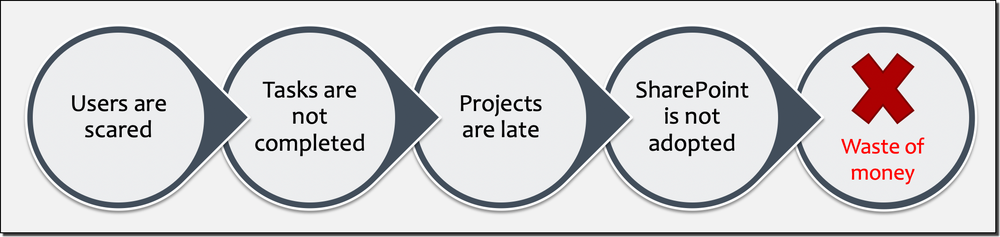

Why SharePoint Training is Important
[!include[content-disclaimer](../includes/content-disclaimer.md)]Share what?
Yes... We hear that often. So first, let's have a quick introduction. SharePoint is a platform. A product. You collaborate and share information across the organization, quickly and securely. You reduce email traffic, and always have the latest version of a document or file. You can even have a beautiful Intranet!
There are of course, many features available in SharePoint, and that's probably what makes it 'complex'. It's a complex product, no denying. But so are many other platforms, products, software, when we don't spend a minimum amount of time learning them. 😉
In this article, we'll have a look at why having a good understanding of SharePoint is essential for user adoption as well as for the company, how to get you started, and also briefly touch on the different roles and responsibilities from a SharePoint perspective.
This article is highly focused on SharePoint Online, but most of it also applies to SharePoint Server (on-premises version).
More than a storage location
One of the first reasons that springs to mind is that SharePoint is not our good old network shares. It's also not another cloud storage. Users might be used to their OneDrive (consumer), Dropbox, Google Drive, and so on. They know how to upload or download their files and pictures don't they? So that's already a good start!
But as mentioned above, SharePoint will offer many other features. Amongst them we have:
- Versioning
- Custom metadata
- Audience targeting
- Content types
- Labels (security)
- Sharing
- Workflows
- Alerts
- ........
And we're only scratching the surface!
Integration with other apps
If you're using Microsoft 365, you've surely heard about Microsoft Teams, Power Apps, Power Automate, etc... Well, they all integrate with SharePoint. So you can imagine the extent of the possibilities. 🙂
That being said, we also don't want to scare users. The goal is to allow them to work efficiently, taking into consideration that 'The Cloud' is likely a new way of working for most of them, with a product that the higher management decided to go for.
Real world scenario
Let's assume for a moment that you're in this situation: Higher management chose SharePoint Online as the new Document Management System, and migrations will take place over the next few weeks or months. It's all been decided. You can't just 'throw users into the wild' and hope for the best, can you? Well, below is a little visualization of what could happen...

Microsoft 365 is a subscription-based platform with multiple products depending on the chosen plan(s). So even if you're not using SharePoint, the price will remain the same. But if you do the same for other services (i.e.: Microsoft Teams, Power Automate, OneDrive for Business, etc...), in the long run, it will feel like you're paying a lot of money for only 'sending emails' while also paying for third-party products.
Identify SharePoint Champions
Some users may have some SharePoint experience already, likely from a previous role. Identify those users for two main reasons:
- They could be Site Owners for their team or department,
- They could help with training other users within the organization.
Users and admin roles
When we speak about SharePoint, we can think of three distinct roles: Users, Super Users, and Administrators. Of course, they won't have the same responsibilities, or see the same interfaces, but even an Admin is likely to be a user or Super User within his or her team, after all!
Note: The role of a SharePoint Service Admin is not in scope of this article
From the most privileged to the least:
- SharePoint Site Collection Administrator
- SharePoint Site Owner (also Super User)
- SharePoint User (Members, Visitors, etc...)
Basic training
Start with basic training per group or per department, a few hours per session. It has to be a compromise between learning fast enough, and practicing the new ways of working to complete their daily tasks. Therefore, plan the topics for each training session to be efficient.
Depending on a user's permissions, the following are considered basic operations within SharePoint:
- Understand Lists and Libraries
- Create, upload, download, delete documents
- Share documents or a Site (depending on permissions)
- Find version history
- Understand metadata
- Use the information panel
- Check-in / Check-out documents (if enabled)
- Create views
- Restore deleted documents in the user's Recycle Bin
- Minimum understanding of how Search works
- Introduce OneDrive for Business
Note: Regardless of the sites' architecture, or ways of working specific to the organization, the above items are really the basics to understand from a SharePoint perspective.
Advanced training
If your users already know how to perform the items from the basic training section, then they could potentially act as Site Owners for their team or department's site.
This involves more responsibilities as Site Owners will need to also take care of the security aspect by managing site permissions, adding and removing users from their site for example. They may also act as a support contact for other site members.
Advanced training could include the following:
- Understand permission inheritance
- Manage permissions (Site Owners)
- Manage other settings (lists, libraries, site)
- Understand the difference between Site columns and List columns
- Sync a library locally
- Sync OneDrive for Business files locally
- Co-authoring
- Create flows using Power Automate
- Create, edit, and customize Pages (i.e.: webparts)
- Create content types
- Create approval workflows
- Customize Views (i.e.: Group By)
- Restore deleted items from the Recycle Bin (second stage)
- Enabling or disabling site features (depending on permissions)
- Introduce Microsoft 365 Groups (renamed from Office 365 Groups) and other integrated apps
Those items are a good starting point, but maybe you'll be asked to customize a SharePoint form using Power Apps? Who knows! 😉
Is it really worth it?
Microsoft and the Community are making a lot of enhancements for SharePoint to make things easier and more intuitive for users. But we've seen so many times that training is very valuable for any type of product. Even a 'simple' product can be challenging for users if they've never seen it!
Having someone explain 'how' to do things in SharePoint will only put users at ease, carry on with their daily tasks, and subsequently make the price of the Microsoft 365 subscription worth it.
Related Articles
Related Resources
Principal author: Veronique Lengelle, MVP